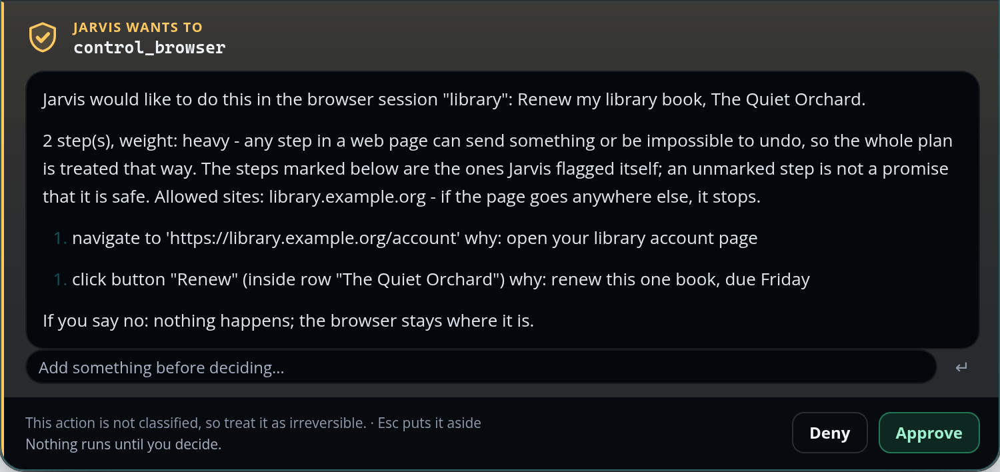
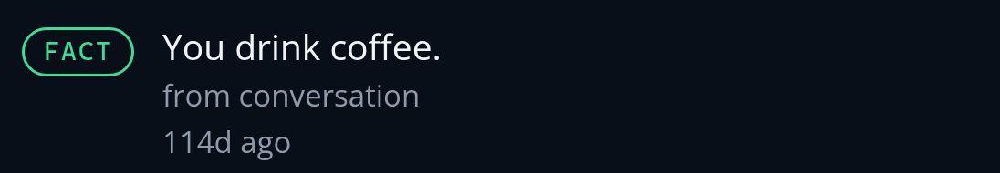
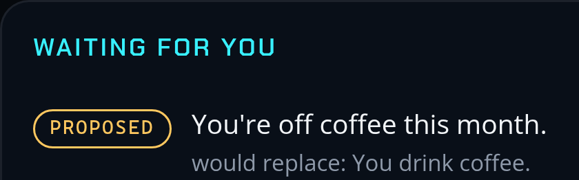
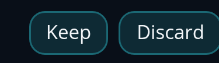
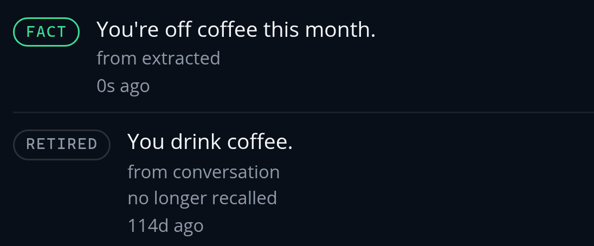

An AI assistant that asks
before it acts.
Every time.
Nobody can shout “yes” at it.
Your phone checks it’s you.
Browser control is ready, but off until a second graphics card is in.
On your PC

🔒
City Library ·
My loans
The Quiet Orchard
Due Friday
Renew
Field Notes on Rain
Due 12 Oct
Renew
A Short History of Maps
Due 20 Oct
Renew
Jarvis · step 2 of 2 · click “Renew”
12:30
EXPIRES IN
00:47
Jarvis wants to control browser
Renew my library book, The Quiet Orchard.
library.example.org · 2 steps
Approve
Deny
Nothing runs until you decide.
✓ Approved
Jarvis wants to control browser
Check the card before you confirm.
Touch the fingerprint sensor
Use PIN
On your phone
June.
Your email, your files, and what it
learns about you stay on your PC.

September.
It asks before it remembers, too.



No longer used.
Still in its history, on your PC.
Your assistant.
Your PC.
Your rules.
Needs a PC with an 8 GB NVIDIA graphics card.
Phone app: Android. No subscription.
Jarvis
Jarvis: